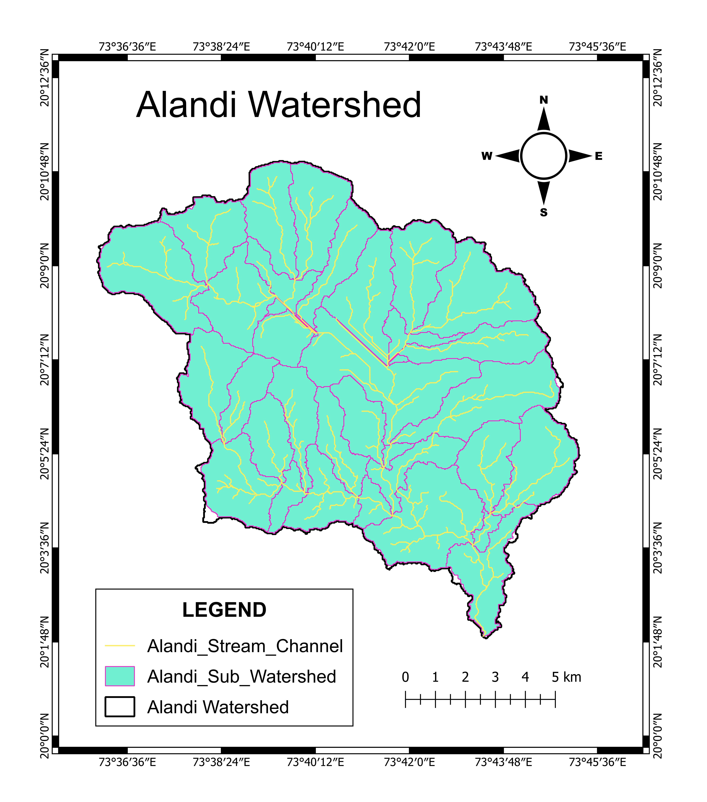

Quantitative morphometric analysis of the Alandi Watershed
using DEM, QGIS and Python for watershed prioritization
and hydrological assessment.
Introduction
This project focused on quantitative morphometric analysis
of the Alandi Watershed using CartoDEM downloaded from the
ISRO Bhuvan NRSC Portal. The watershed was delineated,
35 sub-basins were generated and 32 morphometric parameters
were calculated using QGIS and Python. The analysis
helped understand drainage characteristics, runoff,
infiltration, erosion potential and watershed behaviour,
leading to watershed prioritization.
Study Area
Study Area :
Alandi River Basin
Location :
Tributary of the Godavari River,
Nashik District,
Maharashtra, India
Study Area Map
Objectives
- Delineate watershed and generate sub-basins.
- Calculate morphometric parameters.
- Analyze runoff, infiltration and drainage characteristics.
- Prioritize sub-basins for watershed management.
Software & Dataset Used
QGIS
Python
Microsoft Excel
ISRO Bhuvan CartoDEM
Python Libraries
GeoPandas
Rasterio
Shapely
PyProj
NumPy
NetworkX
Pandas
Methodology Flowchart
Download DEM
↓
Delineate Watershed
↓
Generate Stream Network
↓
Create 35 Sub-basins
↓
Python Morphometric Analysis
↓
Watershed Prioritization
↓
Export Results to Excel
Morphometric Parameters
Linear Parameters
- Drainage Density
- Stream Frequency
- Texture Ratio
- Stream Length Ratio
- Maximum Stream Order
- Bifurcation Ratio
- Length of Overland Flow
- Constant of Channel Maintenance
- Infiltration Number
Areal Parameters
- Basin Area
- Basin Perimeter
- Basin Length
- Form Factor
- Elongation Ratio
- Circulation Ratio
- Compactness Coefficient
- Lemniscate Ratio
- Shape Factor
- Circularity Index
- Compactness Index
- Elongation Index
Relief Parameters
- Maximum Elevation
- Minimum Elevation
- Basin Relief
- Relief Ratio
- Relative Relief
- Ruggedness Number
- Average Slope
- Dissection Index
- Hypsometric Integral
Maps Gallery

Study Area Map
Morphometric Results (35 Sub-basins)
Complete morphometric analysis containing
32 parameters, watershed prioritization,
ranking and hydrological indices.
📊 View Excel Results
Results
- Delineated the Alandi watershed and generated 35 sub-basins.
- Calculated 32 morphometric parameters using Python.
- Prioritize watershed treatment.
- Identified priority sub-basins for soil and water conservation.